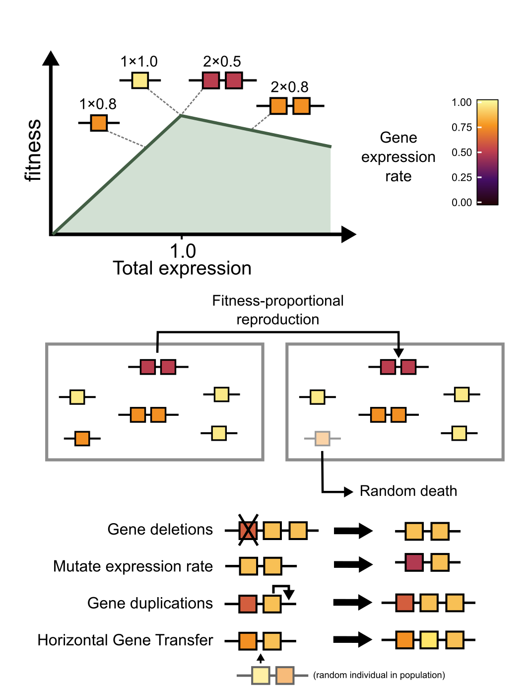

HGT vs DUP
HGT vs DUP is a simple computational model of a population of evolving genomes. It studies how evolving genomes adapt to ongoing mutations that can (partially) break their genes. Each individual carries a number of genes which all have a unique expression rate. The
individuals are maximally fit when expression up to "1.0" gene products. If they express too little, they are less fit. If they express too much, they pay a small cost for the extra protein
expresion. I.o.w., genomes with 1 copies of 1.0 expression (the initial individuals!) are equally fit as individuals with 2 copy of 0.5, of 4 copies of 0.25, etc. The expression rate of genes mutates upon reproduction of the individuals,
which happens according to a Moran process proportional to their fitness. Both populations can lose / gain genes, but one gains genes through gene duplications, while the other population
can only gain genes by picking up genes from other individuals in the populations. These rates (del/dup/hgt) are assumed to be identical. 